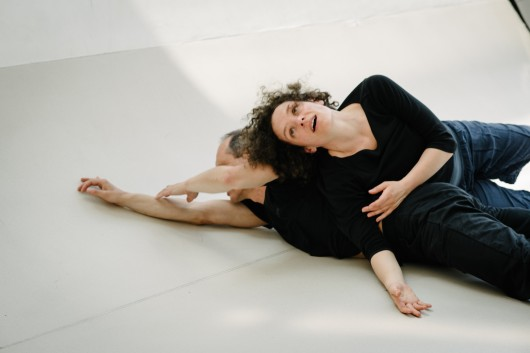

Winter-Intensive

Fotocredits: He Shao Hui
Contact Improvisation Winter-Intensive 2020 mit Christian Apschner (Woche 1+2) und maRia Probst (Woche 2) Woche 1 Mo - Do 10.- 13.2.2020 (beginner/intermediate) Woche 2 Mo - Do 17.- 20.2.2020 "Get ready to Fly" (intermediate) jeweils 18.15 - 20.30h Mo und Do (10.2., 13.2., 17.2., 20.2.): Turnsaal Gilgegasse 12, 9. Bez. Di und Mi (12.2., 12.2., 18.2., 19.2.): Turnsaal Einsiedlergasse 7, 5. Bez. Die Winterintensive bietet die Möglichkeit zwei Wochen lang jeden Tag jeweils von Mo-Do Abend mehr als zwei Stunden lang Contact Improvisation zu tanzen. CI ist Bewegungslernen im ursprünglichsten Sinne. Jede Bewegung entsteht unmittelbar im Augenblick aus dem gegenseitigen Kontakt und dem Zusammenspiel der Körper mit der Schwerkraft. Die zweiwöchige Intensive ist zunächst ein grundlegendes Bewegungstraining zur Schulung der kinästhetischen und sensomotorischen Sinne – vom feinen Wahrnehmen und Spüren des eigenen Körpers in Ruhe und Bewegung, des Bodens, der PartnerInnen bis hin zum Training von angemessenen und schnellen Reaktionen in Überraschungsmomenten. Wir lernen uns selbst wahrzunehmen, in Kontakt zu kommen, im Kontakt aufeinander "zuzuhören" und uns gemeinsam fortzubewegen. Schrittweise werden wir das Basisvokabular und Grundtechniken der Contact Improvisation (im Sinne von Bewegungsprinzipien) kennenlernen und im Tanzen vertiefen. In Woche 1 der Intensive lernen wir grundlegende Bewegungstechniken der CI kennen und vertiefen diese, wie z.B. gemeinsam zu rollen, uns fallen zu lassen und wieder aufzurichten sowie gegenseitig Gewicht abzugeben und aufzunehmen. Wir erforschen die Contact Improvisation als eine Form von nonverbaler Kommunikation. Was bedeutet es, mit dem ganzen Körper zu sprechen und zuzuhören? Wie kann ich Bewegungsimpulse meiner TanzpartnerInnen lesen und in mein Bewegen aufnehmen? Wie kann ich eigene Impulse setzen ohne die Verbindung zu den PartnerInnen zu verlieren? Welcher Dialog, welche Form von Kooperation und welche Bewegungssynergien ergeben sich daraus? sind einige Fragen, die wir uns immer wieder stellen werden. In Woche 2 beginnen wir unsere Tänze mit Schwung und Leichtigkeit in alle Raumrichtungen zu navigieren und unsere Risikobereitschaft herauszufordern. Durch eine anatomisch gute Körperausrichtung sowie durch Modulation der Körperspannung und unter Nutzung der Schwungenergie lernen wir Gewicht körperschonend aufzunehmen und abzugeben. Anhand von einfachen "lifts" lernen wir uns aufzuspannen und ins Fliegen zu kommen und wieder sanft zu landen. Teilnahmeempfehlungen: Tanz- und Bewegungsvorerfahrung aller Art sowie Offenheit und Lust sich auf Berührung und Körperkontakt einzulassen. Kosten: Anmeldung: Christian 0650/8931081 oder ci.rollingpoint@gmail.com Bitte den Kostenbeitrag vorab auf unser Konto Stornobedingungen: Bis drei Tage vor Beginn der Intensive wird der volle Betrag abzüglich einer Bearbeitungsgebühr von € 10,- rückerstattet. Danach keine Stornomöglichkeit. Es kann aber eine Ersatzperson nominiert werden.
_________________________________________________________
aus dem ARCHIV:
Winter-Intensive 2019 mit Christian Apschner (und maRia Probst) Woche 1 Mo - Do 11.- 14.2.2019 "Yield, Reach, Connect and Locomote" Woche 2 Mo - Do 18.- 21.2.2019 "Rise, Fall, Extend and Navigate" jeweils 18.15 - 20.30h Mo und Do (11.2., 14.2., 18.2., 21.2.): Turnsaal Gilgegasse 12, 9. Bez. Die Winterintensive bietet die Möglichkeit zwei Wochen lang jeden Tag jeweils von Mo-Do Abend mehr als zwei Stunden lang Contact Improvisation zu tanzen. CI ist Bewegungslernen im ursprünglichsten Sinne. Jede Bewegung entsteht unmittelbar im Augenblick aus dem gegenseitigen Kontakt und dem Zusammenspiel der Körper mit der Schwerkraft. Im Laufe des Lernprozesses der CI eröffnet sich die Fähigkeit, sich dem gemeinsamen Bewegungsfluss hinzugeben und gleichzeitig den gemeinsamen Tanz so präsent wahrzunehmen, so dass dieser Fluss spielerisch gelenkt werden kann. Die zweiwöchige Intensive ist zunächst ein grundlegendes Bewegungstraining zur Schulung der kinästhetischen und sensomotorischen Sinne – vom feinen Wahrnehmen und Spüren des eigenen Körpers in Ruhe und Bewegung, des Bodens, der PartnerInnen bis hin zum Training von angemessenen und schnellen Reaktionen in Überraschungsmomenten. Wir lernen uns selbst wahrzunehmen, in Kontakt zu kommen, im Kontakt aufeinander "zuzuhören" und uns gemeinsam fortzubewegen. Schrittweise werden wir das Basisvokabular und Grundtechniken der Contact Improvisation (im Sinne von Bewegungsprinzipien) kennenlernen und im Tanzen vertiefen. Während wir in der Woche 1 -"Yield, Reach, Connect and Locomote" vorwiegend das Nachgeben in den Kontakt ("Yielding into Contact", "Liquid Bodies") sowie das gegenseitige Gewichtabgeben und -nehmen im Aneinanderlehnen und Kooperieren in der fließenden Fortbewegung um den rollenden Kontaktpunkt üben werden, möchten wir in Woche 2 - "Rise, Fall, Extend and Navigate" beginnen unsere Tänze mit Schwung und Leichtigkeit in alle Raumrichtungen zu navigieren und unsere Risikobereitschaft herauszufordern. In den improvisierten Tänzen folgen wir unserer Spiellust und Kreativität und suchen dabei das passende Ausmaß an Herausforderung um im Rahmen eines achtsamen "Play-Fight"-Dialogs gemeinsam zu tanzen.
Woche 1: Mo - Do 12.- 15.2.2018 mit Christian Apschner "Mindfulness, Playfulness, Challenge and Flow“ Der Kompaktkurs ist zunächst ein grundlegendes Bewegungstraining zur Schulung der kinästhetischen und sensomotorischen Sinne – vom sensiblen Wahrnehmen und Spüren des eigenen Körpers in Ruhe und Bewegung, des Bodens, der PartnerInnen bis hin zum Training von angemessenen und schnellen Reaktionen in Überraschungsmomenten. CI ist Improvisation im ursprünglichsten Sinn. Jede Bewegung entsteht unmittelbar im Augenblick aus dem Zusammenspiel der Körper mit der Schwerkraft. Im Laufe des Lernprozesses eröffnet sich die komplexe Fähigkeit, sich dem gemeinsamen Bewegungsfluss hinzugeben und gleichzeitig den gemeinsamen Tanz so präsent wahrzunehmen, so dass dieser Fluss jederzeit spielerisch gelenkt werden kann. Wir üben technische Fähigkeiten und Bewegungs- und Kontaktqualitäten wie „Yield“, Reach“, „Push“, „Fall, und Rise“ um für unsere Tanzpartner verfügbar, unterstützend und reaktionsfähig zu bleiben (response-ability). In den improvisierten Tänzen folgen wir unserer Spiellust und Kreativität und suchen dabei das passende Ausmaß an Herausforderung um im Rahmen eines achtsamen Dialogs Grenzen auszuloten. Der Kurs lädt ein, Körper und Geist auf eine neue Weise kennenzulernen und soll nicht zuletzt Spaß und Freude bereiten. Teilnahmeempfehlungen: Tanz- und Bewegungsvorerfahrung aller Art sowie Bereitschaft und Lust sich auf Körperkontakt einzulassen.
Woche 2: Mo - Do 19.- 22.2.2018 mit maRia Probst und Christian Apschner "Mindfulness, Playfulness, Challenge and Flow II“
_________________________________________________________________
Winter-Intensive Contact Improvisation 2017 mit Christian Apschner Bewegen, Spüren, Tanzen und Körperkommunikation und -kontakt als heilsamer Kontrast zu stundenlangem vor dem Computer-Sitzen. Das wahre Leben und Erleben ist analog. Bist du neugierig auf Contact Improvisation oder möchtest du deine Erfahrung vertiefen und erweitern? Diese zweiwöchige Winter-Intensive (acht Abende) stellt eine Art Kompaktkurs dar, in dem die wichtigsten Grundprinzipien und Techniken der Contact Improvisation vermittelt werden. Es ist auch möglich an nur einer Woche teilzunehmen. Inhaltliche Schwerpunkte:
Der Kompaktkurs ist zunächst ein grundlegendes Bewegungstraining zur Schulung der kinästhetischen und sensomotorischen Sinne – vom sensiblen Wahrnehmen und Spüren des eigenen Körpers in Ruhe und Bewegung, des Bodens, der PartnerInnen bis hin zum Training von angemessenen und schnellen Reaktionen in Überraschungsmomenten. CI ist Improvisation im ursprünglichsten Sinn. Jede Bewegung entsteht unmittelbar im Augenblick aus dem Zusammenspiel der Körper mit der Schwerkraft. Im Laufe des Lernprozesses eröffnet sich die komplexe Fähigkeit, sich dem gemeinsamen Bewegungsfluss hinzugeben und gleichzeitig den gemeinsamen Tanz so präsent wahrzunehmen, so dass dieser Fluss jederzeit spielerisch gelenkt werden kann. _________________________________________________________________ Winter-Intensive 2016: 8.- 18.02.2016 "A journey into the sensomotoric dreammachine of Contact Improvisation and 3-D flow movement" Contact Improvisation ist Körperwahrnehmung und sensomotorisches Lernen mit allen Sinnen und auf allen Ebenen. Wir spüren unseren TanzpartnerIn, lokalisieren unsere Gelenke und Knochen, lassen uns mit der Schwerkraft fallen, ertasten den Boden, nehmen den Schwung mit und lenken ihn um..... Alle unsere Sinne sind für den Augenblick offen und die Sinnenseindrücke laufen vorbei wie ein Film - Contact Improvisation als "sensomotoric dreammachine". Die durch Bewegung und Körperkontakt und die entstehenden Neurotransmitter wie Dopamin, Oxytocin und Adrenalin machen uns gleichzeitig entspannt, wach und glücklich. Ein Teil der Faszination der Contact Improvisation beruht auf diesem Bewegungsempfinden, das von vielen CI-TänzerInnen auch mit dem befreienden Gefühl des Fliegens beschrieben wird. In der Intensive fokussieren wir die Aufmerksamkeit auf den Fluss und Schwung der Körpergewichte durch den Raum („swimming in the sea of gravity“, „going with the momentum“) und lernen unsere Körper in der Bewegung um den gemeinsamen Kontaktpunkt zu koordinieren. Trager-Körperarbeit wird uns unterstützen mehr Leichtigkeit in der Bewegung zu finden und den kinästhetischen Sinn zu verfeinern. Mittels "locomotion" erforschen wir dreidimensionale Fortbewegungsmuster durch den Raum um die Bewegungkoordinationen zu optimieren und zu erweitern.
________________________________________________________________
Contact Improvisation Winter-Intensive 2013: 11.- 21.02.2013 "Happy Warriors for Peace" Training Für diese Intensive übernehmen wir einige Ansätze von „martial arts“ wie Aikido, Capoeira oder Tai Chi, um gleichzeitig einerseites gut in uns selbst zentriert und geerdet zu sein und andererseits unsere Wahrnehmung aktiv für den Raum um uns zu öffnen. Wir werden die gesamte Bandbreite zwischen kuschelig-weichem Körper- und Bodenkontakt („Yield“, „Oyxtocintanz“)* und schnellen raumgreifenden Bewegungen ausloten. Bewusstes Denken wird mehr und mehr in den Hintergrund treten um ganz auf unsere natürlichen Körperreflexe und die von der Evolution mitgegebene Bewegungsintelligenz zu vertrauen. Ziel ist es, unseren westlich geprägten Dualismus zwischen Körper und Geist bzw. Bewegungsphysik und –emotion (-chemie) aufzulösen. Dies lässt uns erfahren, wie Spannkraft, Geschmeidigkeit und körperliche Durchlässigkeit, Athletisches und Meditatives gleichwertig im Tanzen verfügbar sein können. *) Yield: Begriff aus der Körpertherapie; bedeuted in die Schwerkraft nachgeben, loslassen, in den Kontakt hineinschmelzen oder einfach nur „sein“ Zielgruppe: Für beide Kurse solltest Du Eigenverantwortlichkeit, ein gewisses Ausmaß an Bewegungserfahrung und Freude an körperlichem Einsatz mitbringen. Für Woche 2 sind zusätzlich solide Grundkenntnisse der Contact Improvisation oder Teilnahme Woche 1 erforderlich. Christian Apschner: Tanzt seit 1995 CI. Seine wichtigsten LehrerInnen aus der Pionierzeit der CI sind Nancy Stark Smith, Daniel Lepkoff, Randy Warshaw, Andrew Harwood, Kirstie Simson u.a., Praktiker für Körperarbeit (Ortho-Bionomy und Trager), Bewegungspädagoge mit somatischem Hintergrund Monika Schuberth: Abgeschlossene zeitgenössische Tanzausbildung am Studio an der Wien, Yogalehrerin und Performerin _________________________________________________________________
Winter-Intensive Contact Improvisation (open level) "The Monk, the Monkey and the Donkey " 13.- 22.2.2012 mit Christian Apschner (maRia Probst) Wann bin ich ein guter Contact Improvisations TänzerIn? Für diese Frage gäbe es je nach individueller Einstellung viele verschiedene Antworten. Eine Antwort wäre: Wenn ich mich möglichst geschickt und athletisch jederzeit in alle Richtungen bewegen kann. Eine andere Antwort wäre: Wenn ich mich im gemeinsamen Bewegen möglichst gut selbst spüren und auf meinen Tanzpartner einfühlen/einstellen kann. In der Winter-Intensive werden wir uns auf das zweitere konzentrieren um grundlegende basics der Contact Improvisiation neu und wieder zu entdecken. In einer angenehmen Atmosphäre und ohne Leistungsdruck nehmen wir uns Zeit, voneinander und miteinander zu lernen und lassen uns dabei überraschen, wo uns die gemeinsamen Tänze hinführen. Offen für AnfängerInnen und Fortgeschrittene (open level), Räume sind leider nicht barrierefrei - keine Danceability Klasse möglich. Ein Grundausmaß an Konzentrationsfähigkeit, Beweglichkeit und Kondition ist erforderlich. |